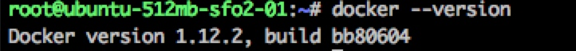
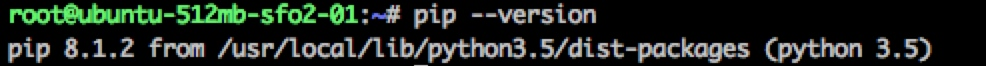
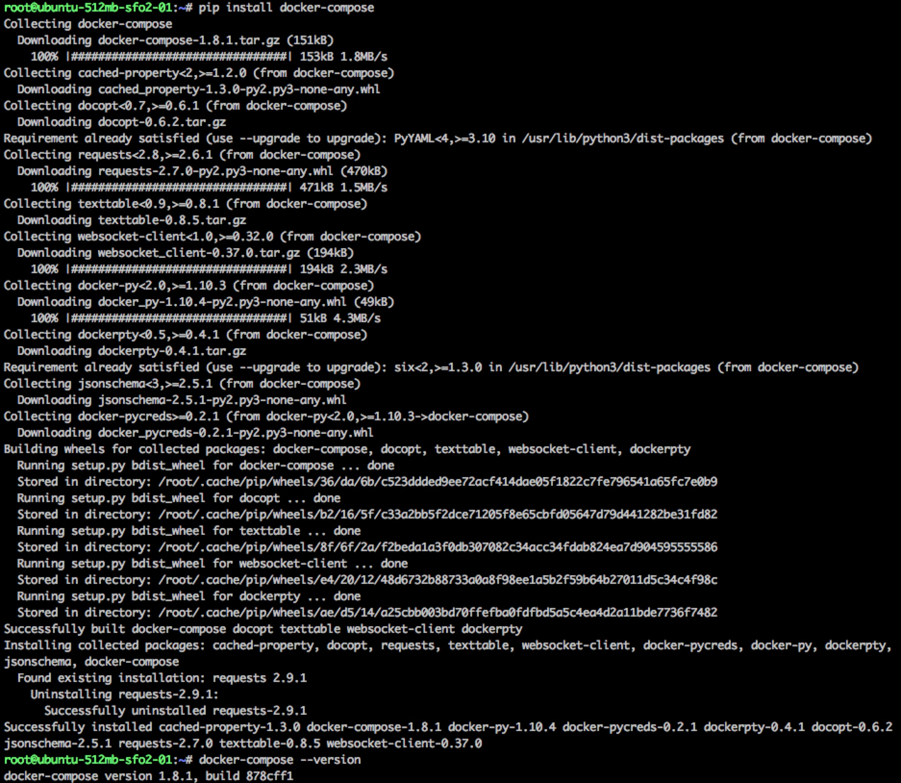
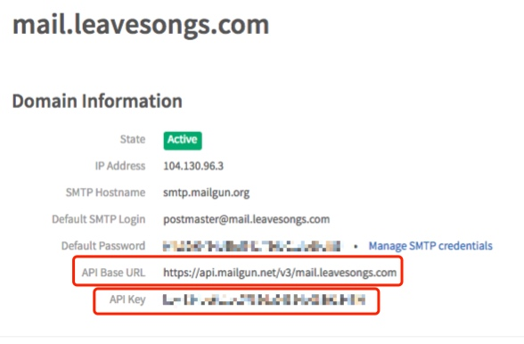
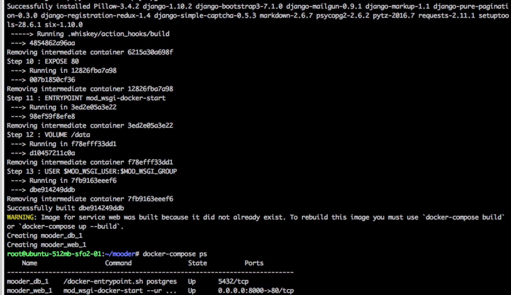
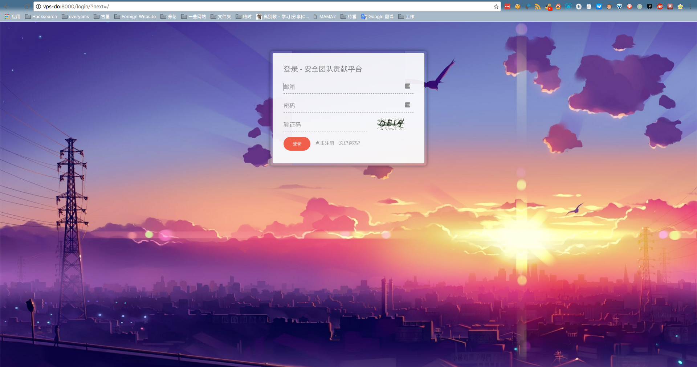

从Docker一键安装#
Mooder支持使用docker-compose一键安装。
1. 安装必要依赖#
以DigtalOcean中Ubuntu 16.04.1纯净版为例，首先 安装Docker 。
此时Docker版本为1.12.2

wget https://bootstrap.pypa.io/get-pip.py python3 get-pip.py
此时pip版本是8.1.2

再安装docker-compose。最简单的方式，可以选择直接使用pip install docker-compose安装。此时docker-compose版本是1.8.1

至此，所有依赖安装完毕。
2. 注册Mailgun#
一键安装环境下的邮件客户端使用的是Mailgun: http://www.mailgun.com/
注册Mailgun，并绑定自己的域名作为邮件发送方(或使用官方提供的一个域名邮箱)。在域名详情页面找到自己的API BASE URL和API KEY，后面会用到。

3. 配置环境变量#
然后拉取代码，进入代码目录。
将默认环境变量文件.env.default重命名为.env，并修改这个文件，配置其中的环境变量：
cp .env.default .env vim .env
该文件默认有如下环境变量：
DB_NAME=postgres INIT_ADMIN_EMAIL=admin@example.com DB_PASSWORD=postgres MAILGUN_SERVER_NAME=example.com DB_PORT=5432 DB_USER=postgres DB_HOST=db DJANGO_SETTINGS_MODULE=mooder.settings_production INIT_ADMIN_NICKNAME=admin MAILGUN_ACCESS_KEY=key-mailgun INIT_ADMIN_PASSWORD=a123123123 EMAIL_HOST_USER=no-reply@example.com
其中，我们只需要修改如下选项：
INIT_ADMIN_EMAIL初始化时的管理员邮箱INIT_ADMIN_PASSWORD初始化时的管理员密码INIT_ADMIN_NICKNAME初始化时的管理员昵称MAILGUN_SERVER_NAME刚才在MAILGUN里找到的API Base URL，只用填写https://api.mailgun.net/v3/后面的部分，如mail.leavesongs.comMAILGUN_ACCESS_KEY刚才在MAILGUN里找到的API KeyEMAIL_HOST_USER发邮件时默认使用的邮箱，比如no-reply@mail.leavesongs.com，这个可以自己定义，但后缀一定是你绑定Mailgun的域名
其他的如DB_HOST、DB_PASSWORD之类的不要修改，否则可能导致数据库连接错误。文档后续内容会说明如何修改这些值才能保证不出错。
保存.env文件，完成环境变量的配置。
4. 一键安装#
执行如下命令，一键安装并启动mooder:
docker-compose up -d
上述命令会执行以下操作：
- 拉取
postgres和mod-wsgi-docker:python-3.5两个容器 - 编译Dockerfile，创建出
mooder容器 - 启动postgres容器，并创建一个硬盘卷，储存数据库
- 启动mooder容器，并依赖于postgres容器，并创建一个硬盘卷，储存附件、头像等静态文件
安装完成，得到两个容器。其中，mooder监听8000端口：

浏览器访问即可：
